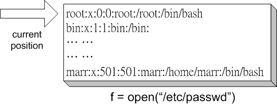

圖2: 常見之內建例外物件架構示意
文．馬兒 <marr@slat.org>
經過前面的觀念建立與基本練習，想必學員們個個已經摩拳擦掌，希望能夠正式登場，和巨蟒過招一番，小試身手了。 此一教學模組的內容，包括許多檔案系統(或是網路資料)與內建模組與新函式的操作實例，而且應該能夠具體協助使用者解決一些日常生活的問題。
檔案物件 (File Object) 算是一個較為進階的基本型別。學習檔案物件的使用，對於學員而言，代表開始叩響程式寫作的大門。以往所接觸到的資料型別，無論單純或複雜，對使用者 而言，常常僅是稍縱即逝，而檔案物件的重要優點，就是能協助使用者儲存大量的資料結果，快速讀取一份大型資料，或是修改一個檔案內容，而不致影響原檔案的存在。
首先，試試開啟檔案來讀取其內容的簡單範例：
>>> f = open("/etc/passwd", "r")
>>> print f
<open file '/etc/passwd', mode 'r' at 0x80b1080>
>>> l = f.readline()
>>> print l
root:x:0:0:root:/root:/bin/bash
範例中的open()內建函式，通常需要輸入兩個參數，一是「檔案名稱」的字串資料，一是「操作模式」(mode)的字串資料，基本的操作模式有三種(字串資料)，分別為"r"(reading)，代表「開啟檔案來進行資料讀取」，"w"(writing)，代表「開啟檔案來進行資料寫入」，"a"(appending)，代表「開啟檔案來增添資料」。其實，操作模式這個參數是可以省略的，其預設值是 "r"，所以open("/etc/passwd")就代表是開啟/etc/passwd檔案來進行讀取內容。更為完整的操作模式說明，如表1所示。
| 操作模式 | 說明 |
|---|---|
| r |
代表「開啟檔案來進行資料讀取」(reading)。 此為操作模組的預設值。 |
| w |
代表「開啟檔案來進行資料寫入」(writing)。 會從檔案開頭處進行資料覆寫。 |
| a |
代表「開啟檔案來增添資料」(appending)。 會從檔案結尾處進行資料增添。 |
| rb, wb, ab |
在基本操作模式後搭配b字元，代表「以二進位資料方式處理」(binary)。 通常是開啟純文字檔案之外的場合所應用，如開啟應用程式、多媒體資料等。 |
上述範例中的第一行，是指定 f 物件為一個檔案物件，不過f物件本身通常並不能馬上提供特定的服務，必須透過物件方法來進行互動。例如 readline() 就是逐行讀取檔案物件的字串內容，以 l = f.readline() 為例，即指定 l 字串為 f 物件的第一行內容，因為程式一開始執行時，其檔案指標位於檔案的最開頭處，所以 f.readline() 會傳回第一行的內容 (圖1)。如果使用者繼續重複執行 f.readline() 的動作，則檔案指標將會接續地往後移動，指向下一行的開頭處，而傳回新的一行內容。

圖1: 檔案物件與指標位置示意
有關檔案指標的詳細介紹，將在進階章節中另加說明。 而基本的檔案物件方法，則整理如表2所示。
| 物件方法 | 說明 | 範例 |
|---|---|---|
| f.readline() |
每次讀取檔案物件裡的一行字串資料。 自檔案指標的現行位置到換行符號(\n)為止。 | l = f.readline() |
| f.readlines() |
將檔案物件的資料讀至檔尾。 自檔案指標的現行位置到檔案結束符號(EOF)為止。 | lines = f.readlines() |
| f.read() |
將檔案物件完整讀入。 讀入的資料會是一個字串型別。 | buf = f.read() |
| f.read(n) |
自檔案指標的現行位置起，讀進n個字元資料。 如果所剩字元比n來得小，就只會讀至檔案結尾。 | f.read(1024) |
| f.write(str) |
將一個字串寫進檔案裡。並沒有傳回值。 由於預設使用緩衝機制(buffering)，所以寫入的資料未必就一定會馬上實際生效。 | f.write("Hello, World!\n") |
| f.writelines(list) |
將一列字串寫進檔案裡。並沒有傳回值。 同樣是沒有自動新增換行符號。 |
list = ["Hello, ", "World!\n"] f.writelines(list) |
| f.close() |
將檔案物件關閉。 被關閉的檔案物件便無法再接受指令操作。 | f.close() |
在新的 Python 2.2 版本裡，open() 已經由內建函式 file() 所取代，不過為了保持相容性，open() 成為 file() 的一個別名 (alias)。另外，open() 實際上還有第三個參數，用以設定「緩衝區塊的大小」(buffer size)，不過，一般而言，將其省略而使用預設值即可。
下列範例程式命名為 readit.py，其用途可自命令列讀進一個檔案名稱，並將其內容顯示在螢幕上：
#!/usr/bin/python
import sys
if __name__ == "__main__":
if len(sys.argv) > 1:
f = open(sys.argv[1], "rb")
t = f.read()
sys.stdout.write(t)
f.close()
執行範例如下：
$ ./readit.py /etc/passwd
如果open()所要開啟的檔案名稱不存在，例如，程式人員不小心把檔案名稱寫錯了，那會發生什麼狀況? 它會產生一個錯誤物件，類似下列狀況：
$ ./readit.py nonexist.txt
Traceback (most recent call last):
File "./readit.py", line 6, in ?
f = open(sys.argv[1], "rb")
IOError: [Errno 2] No such file or directory: 'nonexist.txt'
錯誤(error) 在 Python 程式語言裡，也是一種特殊的物件，不過，實務上大抵可界分為「語法錯誤」(Syntax Errors)與「例外」(Exception)。上述的範例中，產生的是一個 IOError，用以表示是檔案存取方面的錯誤訊息，其他常見的錯誤訊息項目，整理於表3。不過，別太擔心，這樣的錯誤訊息，通常並不會造成什麼毀滅性的問題，甚至常是提醒程式人員有用資訊的方式。
因此，在 Python 程式語言的世界裡，這類的「錯誤訊息」，我們通常總稱之為「例外」(exception)，它們呈現一種物件階層架構(圖2)，最上層代表「所有例外」之物件，接著的一層代表「內建例外」，底下再轄有其他例外物件(註1)，它們又被稱為是不同的例外類型(exception type)。處理這類訊息的機制，稱之為「例外處理」(exception handling)，程式人員甚至可以設計出自訂的例外物件(註2)，這些例外物件可以是類別型別或是字串型別，但在 Python 1.5 版本之後，所有的標準例外物件都以類別型別來表示，並鼓勵程式人員遵循此一原則。
圖2: 常見之內建例外物件架構示意
在學習 Python 程式語言的過程中，最常見的錯誤訊息之一，就是「語法錯誤」(SyntaxError)，下列即是一個範例：
>>> if len(sys.argv) > 1 File "", line 1 if len(sys.argv) > 1 ^ SyntaxError: invalid syntax
通常，語法錯誤的地方，會被一個「箭頭符號」(^)標示出來，在上述範例的if敘述式中，因為行尾缺少一個「冒號符號」(:)，所以導致語法產生錯誤。此外，如果是因為變數或函數名稱不小心寫錯，則會導致「名稱錯誤」(NameError)，這也是另一種常見的訊息。而 SyntaxError、NameError、IOError 等關鍵字，正代表了幾個不同的常見例外類型。
上述「較致命」的錯誤，必須要經由修改程式碼內容來解決，但還有一些「極具彈性」的錯誤，則可以透過例外處理機制來控制。舉例來說，想要處理上述 readit.py 程式範例的 IOError 訊息，可以使用「try... except...」語法，因此其程式內容可以修改如下：
#!/usr/bin/python
import sys
if __name__ == "__main__":
if len(sys.argv) > 1:
try:
f = open(sys.argv[1], "rb")
except IOError:
print "Unable to open '%s'." % sys.argv[1]
sys.exit(0)
t = f.read()
sys.stdout.write(t)
f.close()
try-except 的程式區塊模式，與之前介紹過之 if-else 程式區塊類似，甚至概念上就是類比於流程控制的一種特例。try: 之後接的是一行敘述式，若敘述式在執行過程中產生例外物件，則會交由 except: 比對，例如，若是產生 IOError 錯誤訊息，而且程式碼裡載明 except IOError: 敘述式，則表示程式流程將特別處理 IOError 錯誤訊息，其處理方式就是 except: 之後所接的敘述式內容。
進階一點的方式，是在 except: 的語法中，再接一個參數，它會記錄下相關錯誤訊息的詳細資訊，如下列範例所示：
except IOError, e:
print "Unable to open '%s':" % sys.argv[1], e
sys.exit(0)
下列則是一個處理 ValueError 錯誤類型的範例，學員可以利用這個概念與基礎，嘗試設計出操作介面完善的互動式程式：
#!/usr/bin/python
while 1:
try:
x = int(raw_input("Please enter a number: "))
break
except ValueError:
print "Oops! That was no valid number. Try again..."
整個 try-except 程式區塊的執行流程，可以分解詳述如下：
其他更複雜的例外處理功能，例如「例外處理的彈性變化」、「自動產生例外物件」、「自訂例外物件」等，將在日後的內容中再行介紹。
為了方便接續的內容，我們先來認識一個實用的模組，稱為 string，顧名思義，可用於協助處理字串物件。
>>> import string >>> date = "Fri May 18 CST 2001" >>> piece1 = string.split(date) >>> piece1 ['Fri', 'May', '18', 'CST', '2001'] >>> time = "12:03:27" >>> piece2 = string.split(time, ':') >>> piece2 ['12', '03', '27'] >>> string.digits '0123456789'
上述範例，讓我們見識到模組 string 裡有個 split() 的物件方法，可以將一個字串變數值，依空白字元 (預設狀況) 為切割點，分解成數個小字串，形成一個字串串列傳回。如果切割條件不是空白字元時，在 split() 所接參數中予以指定，如 split(time, ':') 就是指定要以 ':' 字元為切割點。最後則是顯示模組 string 有個字串變數 digits，內容設定為 '0123456789'。
如果我們想把上述字串串列裡的「數字」，如 '18' 與 '2001'，由字串型別轉換成數值型別，可以怎麼做呢? 下列是個方法：
#!/usr/bin/python
def try_ai(s):
if s[0] in string.digits:
return string.atoi(s)
else:
return s
import string
date = "Fri May 18 CST 2001"
piece = string.split(date)
finish_ai = map(try_ai, piece)
print finish_ai
首先，定義一個叫做 try_ai() 的函式，它在讀進字串後，會比對字串的第一個字元，如果第一個字元是屬於阿拉伯數字，那麼就會嘗試將字串轉換成整數，最後傳回其整數型別資料。是的，你會發現它的演算規則有些天真，不過，我們暫時還不需要一個無懈可擊的轉換函式。
接著，我們載入模組 string 之後，利用內建函式 map() 將自製函式 try_ai 與字串串列 piece 連結起來，如此一來，便能如願將 piece 裡的部份字串，轉換成數值型別。
顯然 map() 函式在此例中幫上大忙，簡潔地協助我們將自製函式與序列資料做了巧妙結合。map()函式必須接受兩個參數，一個是(自製的)函式變數，另一個是序列資料的變數，而它會將序列資料(如上例中的piece串列)裡的元素項目，逐一遞交給函式變數執行，而整個結果仍是會傳回一個串列資料。
接下來，我們就可以進一步稍微改良原本天真的 try_ai() 函式：
#!/usr/bin/python
def try_ai(s):
if ':' in s:
ts = string.split(s, ':')
return map(string.atoi,ts)
if s[0] in string.digits:
return string.atoi(s)
else:
return s
import string
date = "Fri May 18 12:03:27 CST 2001"
piece = string.split(date)
finish_ai = map(try_ai, piece)
print finish_ai
這個改良過的版本，可以進一步處理像 '12:03:27' 這樣的「數字」，否則原本更天真的版本會傳回 ValueError 的錯誤訊息。
下列的程式片段，處理效果剛好與之前的程式相反，它會把字串串列重組成一個長字串。重點就是利用了內建函式 reduce()，其運作方式同樣要輸入一個函式名稱及一個序數資料，不過，目的是要把序數資料的元素「合併減少」成一個。
#!/usr/bin/python
piece = ['Fri', 'May', '18', '12:03:24', 'CST', '2001']
def strp(x, y):
return x + ' ' + y
r = reduce(strp, piece)
print r
在Unix環境之下，有些相當方便的工具程式，例如grep、find、regular expression等，原本在舊版Python 1.5.2版本時代是以置於檔案系統內的模組方式來實作，所以可以在/usr/lib/python1.5/目錄裡找到原始碼，但在新版中，很多都被移至/usr/lib/python2.2/lib-old/目錄裡。
如果學員之前已有 Unix 的使用經驗，很可能已經透過 shell 或 Perl 的學習過程，認識到正規表示式的功能。正規表示式的內容相當龐雜，如果按部就班、從頭學習至尾，將近是一本書的份量，在此並不打算將正規表示式的內容悉數介紹，重點在於讓讀者了解，Python 一般的正規表示式功能，和 Perl 相較並無遜色之處。
正規表示式非常實用，系統管理員、資料庫管理員、與網頁設計員，相信於此感受更深。其主要應用場合包括「搜尋」「取代」「解析」(複雜之) 文字字串，值得說明的是，之前已介紹過的 string 模組，該模組中也包括字串搜尋 (index、find、count)、取代 (replace)、解析 (split) 等功能，但大抵僅限於基本而簡單的部份，諸如單一字串、明確字串、字母大小區分的場合，讀者必須適當分辨應用場合，以便採用最佳的解決方案。
>>> import string >>> s = '100 NORTH MAIN ROAD' >>> string.replace(s, 'ROAD', 'RD.') '100 NORTH MAIN RD.' >>> s = '100 NORTH BROAD ROAD' >>> string.replace(s, 'ROAD', 'RD.') '100 NORTH BRD. RD.' >>> s[:-4] + stirng.replace(s[-4:], 'ROAD', 'RD.') '100 NORTH BROAD RD.'
先試試 string 模組的功能，將其 import 來使用。string 模組裡的 replace() 物件方法，可以接受三個參數，在上述範例中，分別是等待處理的字串 s，以及取代前的字串 'ROAD' 和取代後的字串 'RD.'，目的是讓 'ROAD' 以縮寫字 'RD.' 來取代。
前面的範例很順利地達到需求，但後面的例子可就把事情搞砸了，照本宣科的話，會把原本不該取代的 BROAD 也換掉。直覺的變通方法，可以將字串 s 先分成兩段處理，由於 'ROAD' 是 4 個字母長度，而且是位於字串最後面，利用字串分割，將倒數 4 個字母前的字串保留，而最後 4 個字母的字串進行取代動作。顯然，上述的變通方法缺乏彈性，比如說，若是遇到 'STREET' 要改成縮寫字 'ST.' 時，字串分割的字母數必須改為 6，很容易會讓人疲於奔命。
比較理想的方式，便是利用正規表示式的功能，在此我們載入 re 模組，並利用其物件方法：
>>> import re
>>> s = '100 NORTH BROAD ROAD'
>>> re.sub('ROAD$', 'RD.', s)
Python 裡的正規表示式功能由 re 模組提供，其伴隨幾個有用的模組方法，配合字串樣版來進行搜尋、取代、解析等動作。字串樣版 (pattern) 是指一組包含有一般文字以及特殊字元序列的字串，例如 '?(P
正規表示式裡有些特殊字元最簡單且常用，可以先單獨予以記憶，並相互對照其使用意義(表3)。
| 特殊字元 | 功能說明 |
|---|---|
| . | 代表除了換行字元以外的所有字元。 |
| ^ | 代表字串位於開頭。 |
| $ | 代表字串位於結尾。 |
| * | 代表一組出現一次或多次以上的表示模式。 |
| + | 代表一組出現零次或多次以上的表示模式。 |
| ? | 代表一組出現零次或一次的表示模式。 |
再整理一組字串樣版表示法範例，易學易懂，但極具實用性(表4)。
| 字串樣版範例 | 功能說明 |
|---|---|
| hello|Hello | 代表hello或Hello兩個字串均符合條件。 |
| (h|H)ello | 代表hello或Hello兩個字串均符合條件。 |
| [hH]ello | 代表hello或Hello兩個字串均符合條件。 |
| [0-9] | 代表0至9的數字均符合條件。 |
| [^0-9] | 代表0至9數字之外的字元符合條件。 |
另外，用於字串樣版中的特殊字元可以在前面加上反斜線，用以代表特殊字元本身，但有些反斜線的特別應用，值得額外注意，將常見者整理成表(表5)。
| 字元 | 功能說明 |
|---|---|
| \number | 代表除了換行字元以外的所有字元。 |
| \d | 代表字串位於開頭。 |
| \D | 代表字串位於結尾。 |
| \s | 代表空格字元，即r'[ \t\n\r\f\v]'。 |
| \S | 代表非空格字元，即r'[^ \t\n\r\f\v]'。 |
| \w | 代表英數字，即[0-9a-zA-Z]。 |
| \W | 代表\w定義以外的所有字元。 |
下列是一個記錄姓名、電話的檔案，檔案名稱為dirbook.txt：
example$ cat dirbook.txt Beatles, Liverpool Lennon, John Winston: 0800-123456 McCartney, James Paul: 0204-123999 Harrison, George: 0800-999333 Starkey, Richard: 0204-123777 Starr, Ringo: 0204-456777 Smiths, Manchester Morrissey, Steven Patrick: 0928-987654 Marr, Johnny: 0928-849952 Rourke, Andy: 0938111999 Joyce, Mike: 0936555444
我們藉其內容先來練習 re 模組所附簡單的物件方法，例如搜尋及取代：
>>> import re
>>> s = "Johnny Marr"
>>> re.sub("Marr", "Maher", s)
'Johnny Maher'
>>> t = open("dirbook.txt").read()
>>> pat = re.compile(r'John.*:')
>>> re.findall(pat, t)
['John Winston:', 'Johnny:']
>>>
根據上述 dirbook.txt 檔案的內容，我們可以發現其內容格式大致為：
Last_Name, First_Name Middle_Name: Phone_Number
觀察 Last_Name 的組成，只有英文字母而無數字，可用 [a-zA-Z] 來表示，而完整的 Last_Name 包括一個以上的英文字母，所以用 [a-zA-Z]+ 來表示。Last_Name 後緊跟著一個逗號 (,)。
First_Name 部份原則上如法泡製，但 Middle_Name 算是可有可無，因此可用 [a-zA-Z]+( [a-zA-Z]+)? 來表示。之後再緊跟著一個冒號 (:)。
Phone_Number 部份，本範例所呈現者並不算複雜，可分成 4 個數字 (數字可用 \d 表示)，緊跟一個可有可無的 - 符號，再接 6 個數字，可以用 \d\d\d\d-?\d\d\d\d\d\d 來表示。
檔案中，除了兩行 "Beatles, Liverpool" 與 "Smiths, Manchester" 之外，都符合上述的表示式分析。
#!/usr/bin/python
import re
regexp = re.compile(r"[a-zA-Z]+,"
r" [a-zA-Z]+"
r"( [a-zA-Z]+)?"
r": \d\d\d\d-?\d\d\d\d\d\d")
file = open("dirbook.txt", 'r')
for line in file.readlines():
if regexp.search(line):
print "found"
file.close()
執行上述的程式內容，可以得到 9 個 "found" 字串回應，表示從記錄檔的內容中，成功解析出 9 個符合正規表示式的字串。
實務上，透過正規表示式所解析出來的資料，都會希望額外做些加工，再重新以使用者想要的格式來呈現。有個 ?P<name> 的應用技巧，可以幫助我們達到這樣的功能，請仔細觀察下列的範例：
(?P<last>[a-z A-Z]+), (?P<first>[a-zA-Z]+)( (?P<middle>([a-zA-Z]+)))?: (?P<phone> (\d\d\d\d-?\d\d\d\d\d\d)
也就是說，每一組具備意義的正規表示式，我們可以個別賦予其一個「別名」，如 <last>、<first>、<middle>、<phone> 等。值得注意的是，?P<name> 表示法中的問號 (?)，與代表「可有可無」的特殊字元 ? 符號，兩者各自獨立運作，並無相關，請不要混淆。
認識了上述的「別名」設定技巧，我們就可以再透過 group() 物件方法來取得符合的字串資料。可參考下面的例子：
#!/usr/bin/python
import re
regexp = re.compile(r"(?P<last>[a-zA-Z]+),"
r" (?P<first>[a-zA-Z]+)"
r"( (?P<middle>([a-zA-Z]+)))?"
r": (?P<phone>\d\d\d\d-?\d\d\d\d\d\d)"
)
file = open("dirbook.txt", 'r')
for line in file.readlines():
result = regexp.search(line)
if result == None:
print "Not found."
else:
last_name = result.group('last')
first_name = result.group('first')
middle_name = result.group('middle')
if middle_name == None:
middle_name = ""
phone_no = result.group('phone')
print 'Name: ' + first_name + ' ' \
+ middle_name + ' ' \
+ last_name + '\n' \
+ 'Phone: ' + phone_no
file.close()
執行上述程式，可以得到重新整理過的資料內容如下：
example$ python re_group.py Not found. Name: John Winston Lennon Phone: 0800-123456 Name: James Paul McCartney Phone: 0204-123999 Name: George Harrison Phone: 0800-999333 Name: Richard Starkey Phone: 0204-123777 Name: Ringo Starr Phone: 0204-456777 Not found. Name: Steven Patrick Morrissey Phone: 0928-987654 Name: Johnny Marr Phone: 0928-849952 Name: Andy Rourke Phone: 0938111999 Name: Mike Joyce Phone: 093655544
其他進階的正規表示式功能，日後還會介紹(註4)。
在這部份的教學內容裡，學員應該已經具備下列觀念及技巧：
註1 完整的例外物件內容，可參考http://www.python.org/doc/lib/module-exceptions.html網頁介紹。
註2 程式人員自訂例外物件型別，可參考http://www.python.org/doc/tut/node10.html網頁說明。
註3 Unix環境的工具程式，Python程式語言有部份的模組實作，可試著到/usr/lib/python2.2/目錄裡尋找原始碼。
註4 A.M. Kuchling所撰寫的「Regular Expression HOWTO」，請參考http://py-howto.sourceforge.net/regex/regex.html網頁。